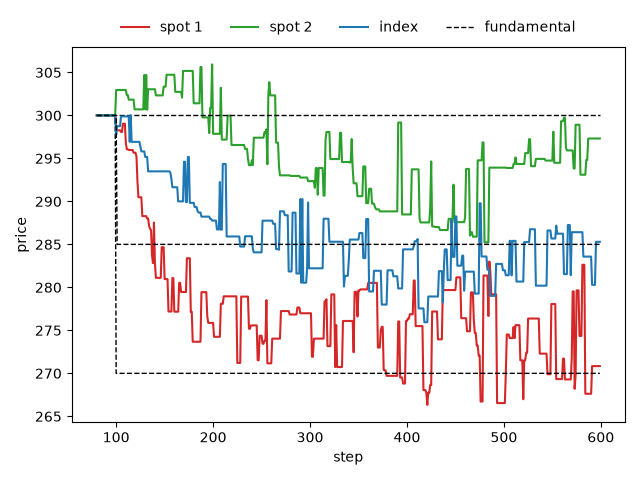

Shock transfer between markets through arbitrage¶
This tutorial follows the Plham tutorial of the same case
(ShockTransferMain and its
use cases), which is based on Torii, Nakagawa
and Izumi (2015).
There are two stocks, spot 1 and spot 2, and an index made of them. At step 100, bad news about spot 1 lowers its
fundamental price by 10%. Nothing happens to spot 2, but arbitrage agents trade it together with spot 1 and the
index. Does the shock reach spot 2 through them?
The complete script is tutorial_shock_transfer.py.
It needs matplotlib for the plot, which is not installed with PAMS
(pip install matplotlib).
The configuration¶
The script uses the configuration of samples/shock_transfer as a Python dict:
CONFIG: Dict[str, Any] = {
"simulation": {
"markets": ["SpotMarket-1", "SpotMarket-2", "IndexMarket-I"],
"agents": ["FCNAgents-1", "FCNAgents-2", "FCNAgents-I", "ArbitrageAgents"],
"sessions": [
{
"sessionName": 0,
"iterationSteps": 100,
"withOrderPlacement": True,
"withOrderExecution": False,
"withPrint": True,
"maxNormalOrders": 3,
"maxHighFrequencyOrders": 0,
},
{
"sessionName": 1,
"iterationSteps": 500,
"withOrderPlacement": True,
"withOrderExecution": True,
"withPrint": True,
"maxNormalOrders": 3,
"maxHighFrequencyOrders": 5,
"events": ["FundamentalPriceShock"],
},
],
},
"FundamentalPriceShock": {
"class": "FundamentalPriceShock",
"target": "SpotMarket-1",
"triggerTime": 0,
"priceChangeRate": -0.1,
"enabled": True,
},
"SpotMarket": {
"class": "Market",
"tickSize": 0.00001,
"marketPrice": 300.0,
"outstandingShares": 25000,
},
"SpotMarket-1": {"extends": "SpotMarket"},
"SpotMarket-2": {"extends": "SpotMarket"},
"IndexMarket-I": {
"class": "IndexMarket",
"tickSize": 0.00001,
"marketPrice": 300.0,
"outstandingShares": 25000,
"markets": ["SpotMarket-1", "SpotMarket-2"],
},
"FCNAgent": {
"class": "FCNAgent",
"numAgents": 100,
"markets": ["Market"],
"assetVolume": 50,
"cashAmount": 10000,
"fundamentalWeight": {"expon": [1.0]},
"chartWeight": {"expon": [0.0]},
"noiseWeight": {"expon": [1.0]},
"noiseScale": 0.001,
"timeWindowSize": [100, 200],
"orderMargin": [0.0, 0.1],
},
"FCNAgents-1": {"extends": "FCNAgent", "markets": ["SpotMarket-1"]},
"FCNAgents-2": {"extends": "FCNAgent", "markets": ["SpotMarket-2"]},
"FCNAgents-I": {"extends": "FCNAgent", "markets": ["IndexMarket-I"]},
"ArbitrageAgents": {
"class": "ArbitrageAgent",
"numAgents": 100,
"markets": ["IndexMarket-I", "SpotMarket-1", "SpotMarket-2"],
"assetVolume": 50,
"cashAmount": 150000,
"orderVolume": 1,
"orderThresholdPrice": 1.0,
},
}
SpotMarket-1andSpotMarket-2are the two stocks. Both take their settings from theSpotMarketblock withextends(see Inheritance with extends). Their prices start at 300, and their fundamental prices do not move by themselves.IndexMarket-Iis anIndexMarketmade of the two stocks. Its fundamental price is the mean of the fundamental prices of the two stocks, because both have the sameoutstandingShares(see IndexMarket). The index has its own order book, so its market price can differ from the index value, the mean of the market prices of the two stocks.FCNAgents-1,FCNAgents-2andFCNAgents-Iare 100 FCN agents each, and each group trades only in its own market. They share the settings of theFCNAgentblock, which are those of Fundamentalists, chartists and noise traders withoutmeanReversionTime.ArbitrageAgentsare 100ArbitrageAgentagents that trade in all three markets.The first session (100 steps) only fills the order books, and
maxHighFrequencyOrders: 0keeps the arbitrage agents off. The second session (500 steps) executes the orders. In each step, up to 3 FCN agents place orders, and after each of them up to 5 arbitrage agents can act (see Sessions).The second session lists the
FundamentalPriceShockevent (see Events).triggerTimecounts from the start of the session, so 0 means step 100. At that step, the fundamental price of spot 1 is multiplied by 1 − 0.1, from 300 to 270.
How the shock can spread¶
An arbitrage agent compares the index market price with the index value.
When the index market price is lower by more than orderThresholdPrice (1.0), it buys 2 shares of the index
and sells 1 share of each stock. When it is higher by more than 1.0, it does the opposite.
Its orders are limit orders at the current market prices and last one step, so most of them are not executed.
The FCN agents of spot 2 only look at spot 2, whose fundamental price stays at 300. Only the arbitrage agents can move spot 2 away from 300. After the shock, spot 1 moves toward 270 and the index toward 285, the mean of 270 and 300. Once every market is at its fundamental price, the index value is also 285, and there is nothing to trade. The shock can reach spot 2 while the markets are moving:
If spot 1 falls faster than the index, the index market price is above the index value. The arbitrage agents sell the index and buy the two stocks, which pushes spot 2 up.
If the index falls faster than spot 1, the index market price is below the index value. The arbitrage agents buy the index and sell the two stocks, which pushes spot 2 down.
Running it¶
run_simulation runs the configuration with one seed. It can change the mean fundamentalWeight of the FCN
agents of spot 1 and of the index, and the number of steps of the second session:
def run_simulation(
seed: int,
spot_weight: float = 1.0,
index_weight: float = 1.0,
main_steps: int = 500,
) -> SequentialRunner:
"""Run the simulation with the given fundamental weights.
Args:
seed (int): seed of the random number generator.
spot_weight (float): mean fundamental weight of the FCN agents of spot 1.
index_weight (float): mean fundamental weight of the FCN agents of the index.
main_steps (int): number of steps of the main session.
Returns:
SequentialRunner: the runner after the run.
"""
config: Dict[str, Any] = copy.deepcopy(CONFIG)
config["FCNAgents-1"]["fundamentalWeight"] = {"expon": [spot_weight]}
config["FCNAgents-I"]["fundamentalWeight"] = {"expon": [index_weight]}
config["simulation"]["sessions"][1]["iterationSteps"] = main_steps
runner = SequentialRunner(settings=config, prng=random.Random(seed))
# hide the two time lines that main() prints
with contextlib.redirect_stdout(io.StringIO()):
runner.main()
return runner
python tutorial_shock_transfer.py first runs the sample with seed 42. It prints the market prices of the
three markets and the fundamental prices of spot 1 and of the index at a few steps:
step spot 1 spot 2 index fund 1 fund I
99 300.00 300.00 300.00 300.00 300.00
100 298.63 302.96 297.75 270.00 300.00
101 298.27 302.96 298.75 270.00 285.00
150 280.96 303.34 293.49 270.00 285.00
200 275.87 297.86 287.77 270.00 285.00
300 276.99 292.36 282.22 270.00 285.00
599 270.84 297.32 285.30 270.00 285.00
Until step 99, no order is executed, and every price is 300.
At step 100, the fundamental price of spot 1 falls to 270. The fundamental price of the index follows one step later: the index computes its fundamental price for a step at the end of the step before, when the shock has not happened yet.
Spot 1 and the index then move toward their new fundamental prices.
It also saves shock_transfer_prices.png:

Between steps 300 and 499, spot 2 is about 291 on average and falls to 285.24 at step 480, although its fundamental price stays at 300. In this run, spot 1 stays above its new fundamental price of 270 until step 379, while the index falls below 285 at step 228 and down to 275.94 at step 418. The index market price is then below the index value on average, so the arbitrage agents more often buy the index and sell the stocks than the opposite. In total, they sell 26 shares of spot 2 and buy 18 shares of the index. This is the shock transfer. They also end the run with 18 more shares of spot 1: their sell orders for spot 1 add up to 3260 shares and their buy orders to only 2715, but more of the buy orders are executed (597 shares against 579).
Which market reacts first¶
The two use cases of the Plham tutorial change how fast spot 1 and the index react to the shock. The script compares three cases:
# the mean fundamental weight of the FCN agents of spot 1 and of the index
CASES: Dict[str, Tuple[float, float]] = {
"same speed": (1.0, 1.0),
"spot reacts faster": (1.0, 0.1),
"index reacts faster": (0.1, 1.0),
}
The noise weight stays 1.0, so with a fundamental weight of 0.1 the agents are mostly noise traders, and their
market moves only slowly toward its new fundamental price.
compare runs each case with the ten seeds 42 to 51 and averages measure over them. To keep the run
short, the second session has only 100 steps:
def measure(runner: SequentialRunner) -> Dict[str, float]:
"""Measure the reaction of spot 2 and of the arbitrage agents in the main session.
Args:
runner (SequentialRunner): the runner after the run.
Returns:
Dict[str, float]: the mean gap between the index market price and the
index value (``premium``), the mean market price of spot 2 minus its
fundamental price 300 (``spot 2``), and the net number of shares of spot 2
and of the index bought by all the arbitrage agents (``arb spot 2`` and
``arb index``).
"""
simulator = runner.simulator
spot1 = simulator.name2market["SpotMarket-1"]
spot2 = simulator.name2market["SpotMarket-2"]
index = simulator.name2market["IndexMarket-I"]
main_session = simulator.sessions[1]
start = main_session.session_start_time
times = range(start, start + main_session.iteration_steps)
spot1_prices = spot1.get_market_prices(times=times)
spot2_prices = spot2.get_market_prices(times=times)
index_prices = index.get_market_prices(times=times)
arbitrage_agents = simulator.agents_group_name2agent["ArbitrageAgents"]
initial: int = 50 * len(arbitrage_agents)
return {
"premium": statistics.mean(
price - (a + b) / 2
for price, a, b in zip(index_prices, spot1_prices, spot2_prices)
),
"spot 2": statistics.mean(spot2_prices) - 300.0,
"arb spot 2": sum(
agent.get_asset_volume(market_id=spot2.market_id)
for agent in arbitrage_agents
)
- initial,
"arb index": sum(
agent.get_asset_volume(market_id=index.market_id)
for agent in arbitrage_agents
)
- initial,
}
After the prices, the script prints one line per case:
case premium spot 2 up arb spot 2 arb index
same speed -0.16 -0.18 4/10 0.0 5.9
spot reacts faster 0.53 0.35 7/10 2.3 -0.1
index reacts faster -0.46 -0.51 4/10 -4.1 11.9
premiumis the index market price minus the index value.spot 2is the market price of spot 2 minus 300. Both are means over the second session.upis the number of seeds where spot 2 is above 300 on average.arb spot 2andarb indexare the numbers of shares of spot 2 and of the index that the arbitrage agents bought in total. A negative number means that they sold.
When spot 1 reacts faster, the premium is positive: the arbitrage agents buy spot 2, and spot 2 is above 300 in 7 of the 10 seeds. When the index reacts faster, the premium is negative: the arbitrage agents buy the index and sell spot 2, and spot 2 is lower than in the other cases. This is the direction of the Plham tutorial, where spot 2 rises in the first case and falls in the second.
The effect is small. In the table, spot 2 moves by less than one price unit on average, while in the run of seed 42
it is about 9 below 300 between steps 300 and 499 (see the plot). Other seeds change the details. With the seeds
52 to 61, spot 2 is 0.08 below 300 on average when spot 1 reacts faster, and above 300 in only 4 of the 10 seeds,
but it is still higher than when the index reacts faster. With these seeds, same speed and
index reacts faster also swap places in the spot 2 column. What stays the same are the signs of the
premium and of arb spot 2 when spot 1 or the index reacts faster, and they show the mechanism more clearly.
With the whole second session, compare(SEEDS, main_steps=500) gives the same order of the three cases, but
takes several times longer.
Not all the orders of the arbitrage agents are executed, so arb index is not exactly −2 × arb spot 2.
Differences from Plham¶
In PAMS, the
marketsof the arbitrage agents must list the component markets as well as the index (see ArbitrageAgent in Agents). The sample does this.PAMS and Plham use different random number generators, so the same configuration and seed give different prices.
The Plham tutorial asks you to run ten or more trials of each case. This tutorial runs ten seeds, with a shorter second session, and prints the means.
References¶
鳥居拓馬, 中川勇樹, 和泉潔 (2015). 複数資産人工市場を用いた裁定取引によるショック伝搬の分析. 人工知能学会全国大会論文集, JSAI2015, 1J4-OS-13a-2 (in Japanese). https://doi.org/10.11517/pjsai.JSAI2015.0_1J4OS13a2
Torii, T., Izumi, K. and Yamada, K. (2015). Shock transfer by arbitrage trading: analysis using multi-asset artificial market. Evolutionary and Institutional Economics Review, 12(2), 395–412. https://doi.org/10.1007/s40844-015-0024-z